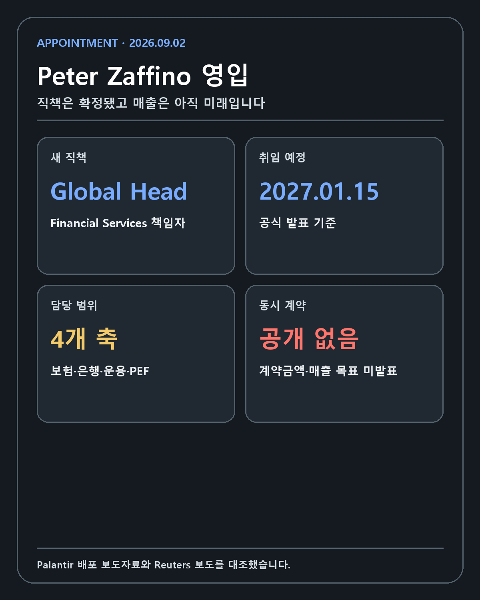
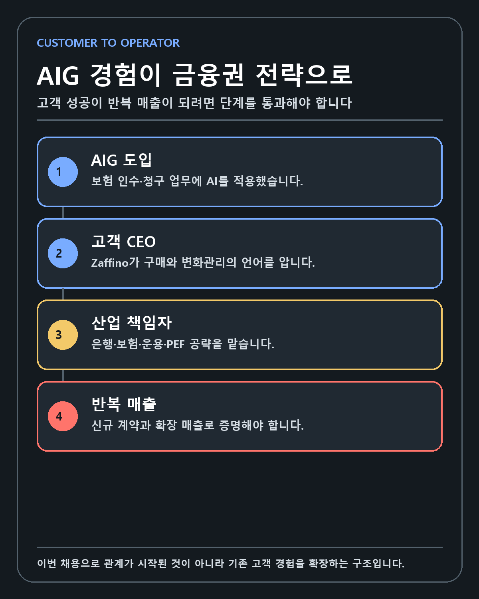
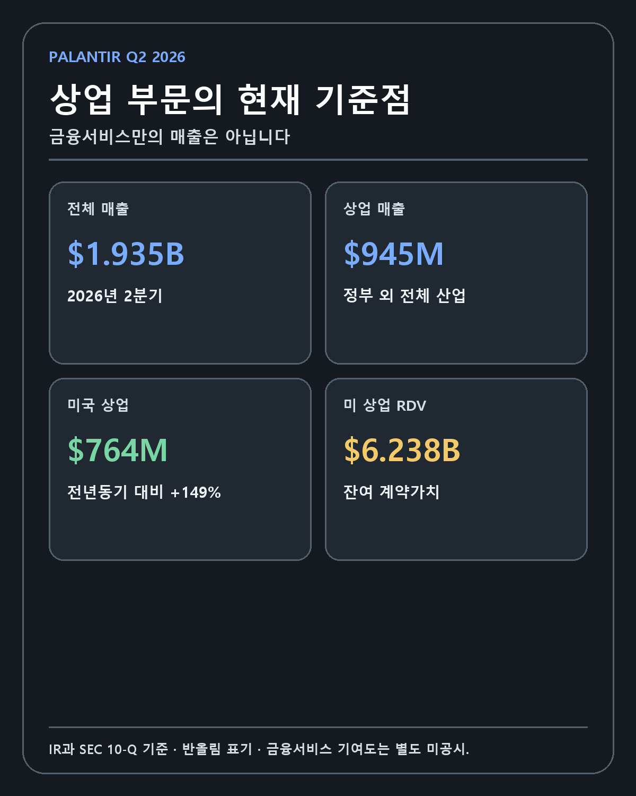
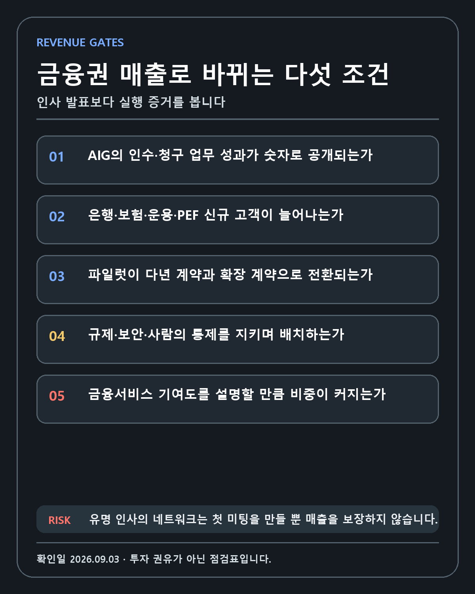

PALANTIR · DEEP RESEARCH
Peter Zaffino 영입으로 읽는 Palantir의 금융서비스 전략: AIG 고객 경험이 산업 확장 조직으로 바뀌는가
고객사 CEO 영입이라는 전략 신호가 보험·은행·자산운용·사모펀드의 반복 매출로 전환되는 조건을 추적합니다.
FIVE-LINE ANSWER
Peter Zaffino는 2027년 1월 15일부터 Palantir의 Global Head of Financial Services로 합류할 예정입니다. 그는 AIG CEO 시절 Palantir를 보험 인수와 보험금 청구 업무에 적용한 고객사 경영자였습니다. 이번 영입은 금융서비스를 수직 산업으로 강화하려는 신호이지만 신규 계약과 산업별 매출 목표는 발표되지 않았습니다. 투자자는 유명 인사의 이름보다 AIG 운영 성과, 신규 금융기관 고객, 파일럿의 다년 계약 전환과 확장 매출을 확인해야 합니다.
한 문장 결론
Palantir가 Peter Zaffino 전 AIG CEO 겸 집행위원장을 2027년 1월 15일부터 Global Head of Financial Services로 영입한 일은 금융서비스를 새로운 수직 산업으로 조직화하려는 강한 신호입니다. 하지만 신규 금융기관 계약, 계약금액, 금융서비스 매출 가이던스는 발표되지 않았습니다. 인사의 무게는 확인됐고 경제적 성과는 앞으로 검증해야 합니다.
이 영입이 일반적인 유명 인사 채용보다 흥미로운 이유는 Zaffino가 Palantir 제품을 써 본 대형 고객사의 최고경영자였기 때문입니다. AIG는 2025년 연차보고서에서 Palantir를 포함한 AI 파트너십을 보험 인수와 보험금 청구 업무에 적용했다고 설명했습니다. 고객의 최고 의사결정자가 공급사로 이동해 같은 산업의 다른 고객을 공략하는 구조입니다.
투자자가 확인할 질문은 Zaffino가 얼마나 유명한가가 아닙니다. AIG 사례가 정량적인 운영 성과로 증명되는지, 은행·보험·자산운용·사모펀드에서 신규 고객이 생기는지, 파일럿이 다년 계약과 확장 매출로 바뀌는지를 봐야 합니다.
FACT 1: 임명 내용과 날짜

Palantir의 2026년 9월 2일 배포 보도자료는 다음 내용을 명시했습니다.
| 항목 | 공식 발표 |
|---|---|
| 임명자 | Peter Zaffino |
| 직책 | Global Head of Financial Services |
| 효력 발생 예정일 | 2027년 1월 15일 |
| 담당 고객 | 보험사, 은행, 자산운용사, 사모펀드, 기타 금융기관 |
| 경력 | 전 AIG CEO 및 집행위원장 |
Reuters도 AIG의 경영진 전환과 Palantir 합류 일정을 같은 내용으로 확인했습니다. Zaffino는 2026년 9월 15일 AIG 집행위원장과 이사직에서 물러난 뒤 고문으로 전환을 지원하고, 다음 해 1월 Palantir 업무를 시작할 예정입니다.
Palantir의 발표에는 제품 출시, 신규 계약, 계약금액이나 산업별 매출 목표가 없습니다. 이 사실이 글 전체의 경계입니다. 인사는 확정됐지만 매출은 확정되지 않았습니다.
FACT 2: Zaffino가 AIG에서 맡았던 일
AIG 공식 리더십 약력에 따르면 Zaffino는 2021년부터 2026년 6월 1일까지 CEO를 맡았고, 2022년부터 이사회 의장을 지냈습니다. AIG는 그가 보험 인수의 수익성을 회복하고 비핵심 사업을 정리했으며 기술 인프라를 현대화했다고 설명합니다.
이 경력은 금융기관 소프트웨어 판매에서 중요합니다. 은행과 보험사는 일반 소비자 앱과 다른 방식으로 기술을 도입합니다. 데이터 보안, 규제, 모델 위험, 감사 가능성, 접근 권한과 책임자를 함께 설계해야 합니다. 한 부서가 기술을 원한다고 계약이 끝나지 않습니다. 최고경영진, 현업, 리스크, 법무, 보안과 규제 대응 조직이 같은 프로젝트에 합의해야 합니다.
보험 경영자는 상품 가격, 위험 인수, 보험금 지급, 재보험, 자본 배분과 규제자본을 동시에 봅니다. 소프트웨어가 시간을 줄였다는 설명만으로는 부족합니다. 손해율, 심사 정확도, 업무 처리량, 운영비와 고객 경험이 어떻게 달라졌는지 확인해야 합니다. Zaffino가 가진 가치는 금융기관의 구매 구조와 운영 언어를 이해한다는 데 있습니다.
FACT 3: AIG와 Palantir는 이미 파트너였습니다

AIG 2025년 연차보고서는 Palantir, Anthropic, AWS와 Google의 역량을 보험 인수와 보험금 청구 업무에 넣었다고 설명했습니다. AIG는 사내 개념, 데이터 요소, 프로세스와 업무 흐름을 연결하는 AIG ontology를 구축한다고 밝혔습니다.
Ontology는 단순한 데이터 저장소가 아닙니다. 보험 계약, 고객, 청구, 위험, 지급과 승인 같은 업무 개념을 시스템 안에서 연결합니다. 같은 고객을 여러 부서가 다른 이름으로 관리하고, 계약 조건이 문서와 데이터베이스에 흩어져 있을 때 AI 모델만 추가하면 오류가 커질 수 있습니다. 먼저 개념과 권한, 행동을 정리해야 모델의 결과를 업무에 쓸 수 있습니다.
AIG Investor Day 2025에는 Zaffino, Palantir 공동창업자 Alex Karp, Anthropic 공동창업자 Dario Amodei가 함께 참여했습니다. 대화 주제는 보험 인수와 청구에서 생성형 AI를 어떻게 쓰고 최고경영진이 조직 변화를 어떻게 이끄는가였습니다.
Palantir의 임명 발표에서 Karp는 두 회사가 제품을 배치해 실제 알파를 만들었다는 취지로 Zaffino와의 경험을 언급했습니다. 관계의 순서는 처음 만난 유명 인사를 영입한 것이 아니라 고객 현장에서 함께 도입을 경험한 경영자를 산업 책임자로 이동시킨 쪽에 가깝습니다.
여기에는 반대 질문이 필요합니다. AIG가 파트너십을 확대했다는 사실과 Palantir가 AIG에서 얼마의 매출을 얻었는지는 다릅니다. 보험 인수와 청구에 AI를 넣었다는 설명도 처리시간, 손해율, 비용과 매출 개선을 자동으로 증명하지 않습니다. 공개 자료에서 Palantir 단독 효과를 분리한 정량 수치는 아직 충분하지 않습니다.
Palantir가 금융서비스에서 해결하려는 문제
금융기관은 데이터가 부족한 조직이 아닙니다. 오히려 데이터가 많고 규제 때문에 함부로 결합하기 어렵습니다. 은행에는 계좌, 거래, 대출, 담보, 고객확인, 이상거래, 시장위험과 규제보고 데이터가 있습니다. 보험사는 계약, 인수, 청구, 손해사정, 재보험과 자본 데이터를 다룹니다. 자산운용사와 사모펀드는 시장, 포트폴리오, 거래, 실사와 운영회사 데이터를 연결합니다.
문제는 모델 정확도만이 아닙니다. 누가 어떤 데이터에 접근했는지, AI가 어떤 근거로 제안을 만들었는지, 사람이 언제 승인했는지와 결과를 다시 시스템에 어떻게 기록할지를 관리해야 합니다. 금융회사는 좋은 답변을 주는 챗봇보다 감사 가능한 업무 시스템을 필요로 합니다.
Palantir의 AIP Claims Coverage Engine은 보험금 청구 내용과 계약 조건을 비교하고 사람이 최종 통제하는 흐름을 제시합니다. 이 구조는 자연어와 이미지를 읽는 모델, 보험 계약 규칙, 승인 권한과 업무 기록을 하나의 운영 흐름에 넣으려는 예시입니다.
제품 데모가 상업적 성공을 보장하지는 않습니다. 금융기관은 데이터 이전과 시스템 통합에 많은 비용을 쓰고, 기존 코어 시스템을 한 번에 바꾸기 어렵습니다. 규제자는 모델의 설명 가능성, 차별 위험, 개인정보와 제3자 위험을 확인합니다. Palantir는 기술뿐 아니라 계약, 거버넌스와 변화관리까지 증명해야 합니다.
현재 Palantir 상업 부문의 기준점

Palantir의 2026년 2분기 공식 실적과 SEC에 제출된 10-Q를 대조했습니다.
| 2026년 2분기 지표 | 확인된 값 |
|---|---|
| 전체 매출 | 19억3546만달러 |
| 상업 부문 매출 | 9억4543만달러 |
| 미국 매출 | 15억7305만달러 |
| 미국 상업 매출 | 7억6400만달러 |
| 미국 상업 매출 성장률 | 전년동기 대비 149% |
| 미국 상업 잔여 계약가치 | 62억3800만달러 |
상업 부문은 이미 빠르게 성장하고 있습니다. 이번 영입은 침체한 사업을 구조조정하기보다 성장하는 상업 조직 안에서 금융서비스 전문성을 강화하는 움직임으로 해석할 수 있습니다.
그러나 표에서 금융서비스 행은 찾을 수 없습니다. Palantir는 정부와 상업, 미국과 해외 같은 구분을 공시하지만 보험·은행·제조·의료·에너지의 매출을 각각 공개하지 않습니다. 금융서비스의 현재 기반과 Zaffino 영입 이후 기여도를 외부 투자자가 정확히 계산할 수 없습니다.
미국 상업 매출 149% 성장도 금융서비스 성장률이 아닙니다. 여러 산업의 계약과 확장 매출이 합쳐진 값입니다. 금융권 진출 기대를 이 숫자에 그대로 붙이면 이미 일어난 성장과 앞으로 기대하는 성장을 중복 계산하게 됩니다.
왜 금융서비스 책임자를 따로 두는가
기업용 AI 판매는 모든 산업에 같은 제품을 보여 주는 방식으로 끝나지 않습니다. 고객의 핵심 업무, 규제, 데이터 구조와 구매 의사결정자가 다릅니다. 제조업에서는 생산계획과 공급망, 의료에서는 임상과 개인정보, 금융에서는 위험과 자본, 규제 준수가 중심입니다.
산업 책임자는 제품 기능을 설명하는 사람보다 고객의 의사결정 구조를 바꾸는 사람에 가깝습니다. 어떤 사용 사례부터 시작해야 경영진이 성과를 볼 수 있는지, 현업과 리스크 조직이 어디서 충돌하는지, 첫 프로젝트를 어떤 계약과 확장 경로로 설계할지 정해야 합니다.
Zaffino는 AIG의 최고경영자로 Palantir 도입을 경험했습니다. 잠재 고객이 우리 같은 복잡한 금융기관에서 정말 작동하는가라고 물을 때 공급사 영업진보다 다른 답을 줄 수 있습니다. 고객의 언어로 위험과 실행을 설명하고 최고경영진 간 신뢰를 만들 가능성이 있습니다.
이것은 가능성입니다. 최고경영자 네트워크가 첫 미팅을 만들 수는 있어도 파일럿의 기술 검증과 계약 확대를 대신하지 못합니다. 산업 책임자가 제품 조직과 영업 조직, 고객 성공팀을 실제로 바꾸지 못하면 상징적 채용에 머무를 수 있습니다.
AIG 사례가 다른 금융기관으로 복제되려면
첫째, 사용 사례가 명확해야 합니다. 보험 인수, 청구, 사기 탐지, 자본 배분 중 어디에서 시작했고 어떤 업무 지표를 바꿨는지 공개해야 합니다. AI 전환이라는 넓은 표현만으로는 다른 보험사가 투자 대비 효과를 계산하기 어렵습니다.
둘째, 데이터 모델을 재사용할 수 있어야 합니다. 각 회사의 계약과 규정은 다르지만 고객, 계약, 청구, 승인과 위험 같은 핵심 개념에는 공통 구조가 있습니다. Palantir가 이 구조를 제품화하면 다음 고객의 구축 시간이 줄어듭니다. 모든 프로젝트를 처음부터 맞춤 개발하면 성장 속도와 마진이 제한됩니다.
셋째, 규제와 보안을 영업 뒤에 붙이는 비용이 아니라 제품의 일부로 만들어야 합니다. 접근 권한, 감사 기록, 사람의 승인, 모델 버전과 데이터 출처를 처음부터 관리하면 금융기관의 검토 시간이 줄 수 있습니다.
넷째, 경영진 후원자가 현업 전환을 이끌어야 합니다. 기술팀의 파일럿이 실제 업무로 들어가면 역할과 책임이 바뀝니다. 누가 AI 제안을 검토하고 오류를 책임지며 기존 시스템과 결과를 동기화하는지 정하지 않으면 사용률이 낮아집니다.
다섯째, 첫 계약이 확장돼야 합니다. 보험금 청구에서 시작한 고객이 인수, 리스크와 자본 배분으로 넓혀야 고객당 매출과 전환비용이 커집니다. Palantir의 해자는 신규 로고 수뿐 아니라 한 고객 안에서 운영 범위가 얼마나 깊어지는지로 확인됩니다.
수익 구조에서 볼 다섯 단계

| 단계 | 공개 증거 | 투자자가 볼 지표 |
|---|---|---|
| 관계 형성 | 산업 책임자 영입, 경영진 미팅 | 신규 금융기관 고객 |
| 초기 도입 | Bootcamp·파일럿 | 유료 전환율, 첫 계약 규모 |
| 생산 배치 | 실제 인수·청구·리스크 업무 | 처리시간, 정확도, 비용 |
| 확장 | 부서와 국가, 사용 사례 확대 | 고객당 매출, 다년 계약 |
| 반복 가능한 산업 | 여러 고객의 공통 제품 구조 | 금융서비스 매출·잔여 계약가치 |
현재 공개적으로 확인된 것은 관계 형성과 기존 AIG 도입 경험입니다. 일부 생산 배치에 대한 서술은 있지만 Palantir 단독 효과의 정량 지표는 부족합니다. 신규 금융기관 계약과 산업별 매출은 다음 단계의 증거입니다.
강세 시나리오
Zaffino가 AIG 사례를 정량적인 레퍼런스로 만들고 대형 보험사와 은행의 최고경영진을 설득합니다. Palantir는 보험금 청구, 인수, 사기 탐지와 리스크 관리의 공통 데이터 구조를 제품화합니다. 파일럿이 빠르게 다년 계약으로 바뀌고 한 고객 안에서 여러 부서로 확장됩니다.
이 경우 금융서비스는 미국 상업 매출의 독립적인 성장축이 됩니다. 대형 금융기관의 높은 규제와 보안 요구를 통과한 경험은 다른 산업에도 신뢰 자산으로 작용할 수 있습니다. 고객당 매출이 늘고 장기 계약이 쌓이면 기술 해자와 현금흐름이 함께 강화됩니다.
강세 시나리오의 확인 신호는 유명 고객 이름만이 아닙니다. 금융기관 신규 계약 수, 기존 계약의 확대, 운영 성과와 금융서비스 관련 잔여 계약가치가 필요합니다.
기준 시나리오
Zaffino 영입은 금융권에서 Palantir의 인지도를 높이고 첫 미팅을 늘립니다. 그러나 보안·규제 검토와 코어 시스템 통합 때문에 계약 전환에는 시간이 걸립니다. 일부 보험사와 자산운용사에서 성과가 나오지만 은행 전체로 확장되는 속도는 느립니다.
매출 효과는 2027년 취임 직후 한 분기에 나타나기보다 여러 분기에 걸쳐 확인됩니다. Palantir의 전체 미국 상업 성장은 이어지지만 금융서비스 기여도를 별도로 확인하기 어렵습니다. 투자자는 회사의 고객 사례와 컨퍼런스콜 문구를 추적해야 합니다.
이 시나리오에서는 영입이 실패한 것도, 즉시 큰 수익을 만든 것도 아닙니다. 기업용 소프트웨어의 긴 도입 주기가 적용됩니다.
약세 시나리오
유명 경영진 영입이 계약 파이프라인의 질을 바꾸지 못합니다. 금융기관은 데이터 주권, 모델 위험과 제3자 의존을 이유로 생산 배치를 늦춥니다. 내부 개발팀과 기존 대형 공급사가 핵심 시스템을 지키고 Palantir는 주변 분석 도구에 머뭅니다.
AIG 사례의 운영 지표가 공개되지 않고 다른 금융기관의 확장 계약도 나오지 않으면 영입은 상징적 메시지로 남습니다. 급여와 조직 비용은 늘지만 산업별 매출은 분리해 보여 줄 만큼 커지지 않습니다.
약세 시나리오에서 가장 중요한 무효화 조건은 제품 실패보다 확장 실패입니다. 파일럿은 많지만 다년 계약과 고객당 매출이 늘지 않는다면 금융서비스 해자는 증명되지 않습니다.
경쟁과 규제의 반대 논리
금융기관은 이미 수많은 데이터와 분석 공급자를 사용합니다. 클라우드 사업자, 코어 뱅킹·보험 소프트웨어, 데이터 웨어하우스, 컨설팅 회사와 내부 개발팀이 경쟁합니다. Palantir가 모든 시스템을 대체할 필요는 없지만 핵심 운영 계층을 차지하려면 기존 환경과 안정적으로 연결돼야 합니다.
규제는 진입장벽이면서 비용입니다. 한 번 높은 기준을 통과하면 후발업체가 따라오기 어려울 수 있습니다. 반대로 규제 변화, 개인정보 제한, 모델 설명 의무가 강화되면 구축 기간과 비용이 늘어납니다. 사람의 최종 승인 구조도 형식적인 버튼이 아니라 실제 권한과 책임으로 설계돼야 합니다.
Zaffino의 보험 전문성이 은행, 자산운용과 사모펀드에 그대로 적용된다고 단정할 수도 없습니다. 금융서비스라는 큰 이름 아래 업무 모델과 규제자는 다릅니다. 보험에서 얻은 신뢰를 다른 하위 산업으로 옮기는 실행력이 필요합니다.
내 투자 기준으로 본 이번 영입
저는 기업을 기술, 해자, 창업자와 경영진, 성장률, 현금흐름 순서로 봅니다. 이번 뉴스는 이 가운데 해자와 경영진 항목에 긍정적인 변화입니다. Palantir가 제품을 사용한 고객사의 최고경영자를 산업 책임자로 데려왔고, 금융기관의 구매와 변화관리 언어를 조직 안에 넣었습니다.
기술 항목은 이전과 같습니다. 데이터와 모델을 실제 업무, 권한과 의사결정에 연결하는 능력이 금융에서도 작동해야 합니다. Zaffino의 이름이 기술 실패를 보완할 수는 없습니다.
성장률과 현금흐름은 아직 확인 전입니다. 2026년 2분기 상업 부문은 빠르게 성장했지만 금융서비스 몫은 공개되지 않았습니다. 이번 영입이 신규 계약과 확장 매출을 만들 때 숫자에 반영됩니다.
저는 팔란티어를 AI 시대의 핵심 플레이어로 보고 보유하고 있습니다. 집중도가 높다는 사실만으로 투자 논리를 바꾸지는 않습니다. 다만 보유자의 기대가 인사 뉴스를 이미 발생한 매출처럼 읽게 만들 수 있으므로 계약, 사용 범위와 현금흐름을 더 엄격하게 보겠습니다.
앞으로 확인할 공개 증거
- 2027년 1월 15일 취임 전후 금융기관 신규 계약
- AIG의 보험 인수·청구 처리시간, 정확도, 비용과 손해율 관련 정량 사례
- 보험 외 은행·자산운용·사모펀드 고객의 생산 배치
- 파일럿에서 다년 계약으로 넘어가는 전환과 고객당 매출
- 금융 규제·데이터 보안·모델 통제를 제품화한 기능
- 금융서비스가 미국 상업 매출과 잔여 계약가치에 기여했다는 경영진 설명
- 신규 영입에 따른 조직 구조, 보상과 책임 범위
첫 번째 고객 발표만으로 결론을 내리지 않겠습니다. 초기 계약이 생산 배치로 넘어가고 다른 업무로 확장되는지 확인해야 합니다. 반대로 금융서비스 매출을 별도로 공시하지 않더라도 여러 고객 사례와 반복 계약이 쌓이면 전략이 작동한다는 증거가 됩니다.
확인할 수 없는 것
현재 공개 자료만으로 금융서비스 산업의 매출, 고객 수, 평균 계약 규모와 이익률을 계산할 수 없습니다. Zaffino의 보상 구조와 정량 목표도 발표되지 않았습니다. AIG에서 Palantir가 만든 운영 개선의 구체적인 수치도 충분히 공개되지 않았습니다.
이번 영입과 같은 날 특정 금융기관 계약이 체결됐다는 공식 발표도 찾지 못했습니다. 시장 규모 숫자를 가져와 Palantir의 잠재 매출로 곱하는 방식은 쓰지 않았습니다. 규제가 강한 산업에서 전체 시장 규모와 실제 소프트웨어 매출은 큰 차이가 있기 때문입니다.
최종 판단
Peter Zaffino 영입은 Palantir가 금융서비스를 본격적인 성장축으로 만들려는 의도를 보여 줍니다. 정부·국방에서 출발한 운영 소프트웨어, AIP를 통한 일반 기업 확장, AIG에서의 보험 업무 경험을 금융권 전체로 넓히려는 순서가 읽힙니다.
가장 중요한 차별점은 Zaffino가 단순한 금융 경력자가 아니라 Palantir와 함께 AI 도입을 경험한 고객사의 최고경영자였다는 사실입니다. 이 경험은 제품 설명보다 강한 신뢰를 만들 수 있습니다. 그러나 신뢰가 매출이 되려면 신규 고객, 유료 전환, 생산 배치, 확장 계약과 운영 성과를 통과해야 합니다.
이번 발표는 투자 논리의 긍정적인 중간 증거입니다. 완성된 결론은 아닙니다. 2027년 1월 15일이라는 취임일보다 그 전후로 공개되는 금융기관 계약과 AIG 사례의 숫자를 추적하겠습니다.
이 글은 독립적인 교육·투자 기록이며 특정 종목의 매수 또는 매도를 권유하지 않습니다. 회사의 발표와 시장 가격은 작성 이후 달라질 수 있고 모든 투자 결정과 손익의 책임은 투자자 본인에게 있습니다.
작성 방법
2026년 9월 3일 기준 Palantir의 임명 발표, AIG 공식 약력·연차보고서·Investor Day, Palantir 2026년 2분기 IR과 SEC 10-Q를 교차검증했습니다. 금융서비스 산업별 매출과 신규 책임자의 정량 목표는 공개되지 않아 UNKNOWN으로 유지했습니다.
개인 투자 기록이며 특정 금융상품이나 종목의 매수·매도를 권유하지 않습니다. 투자 판단과 손익의 책임은 투자자 본인에게 있습니다.